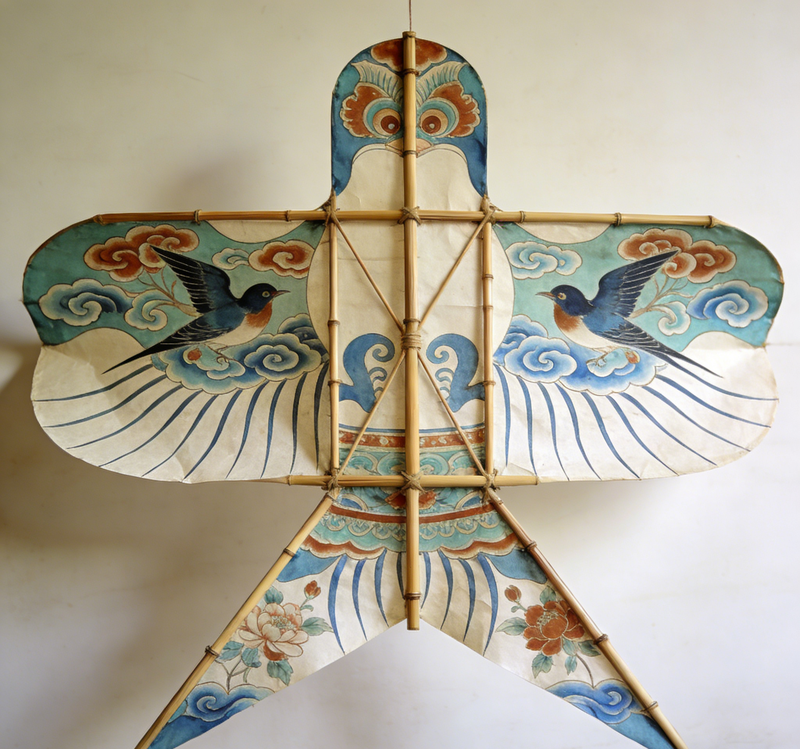
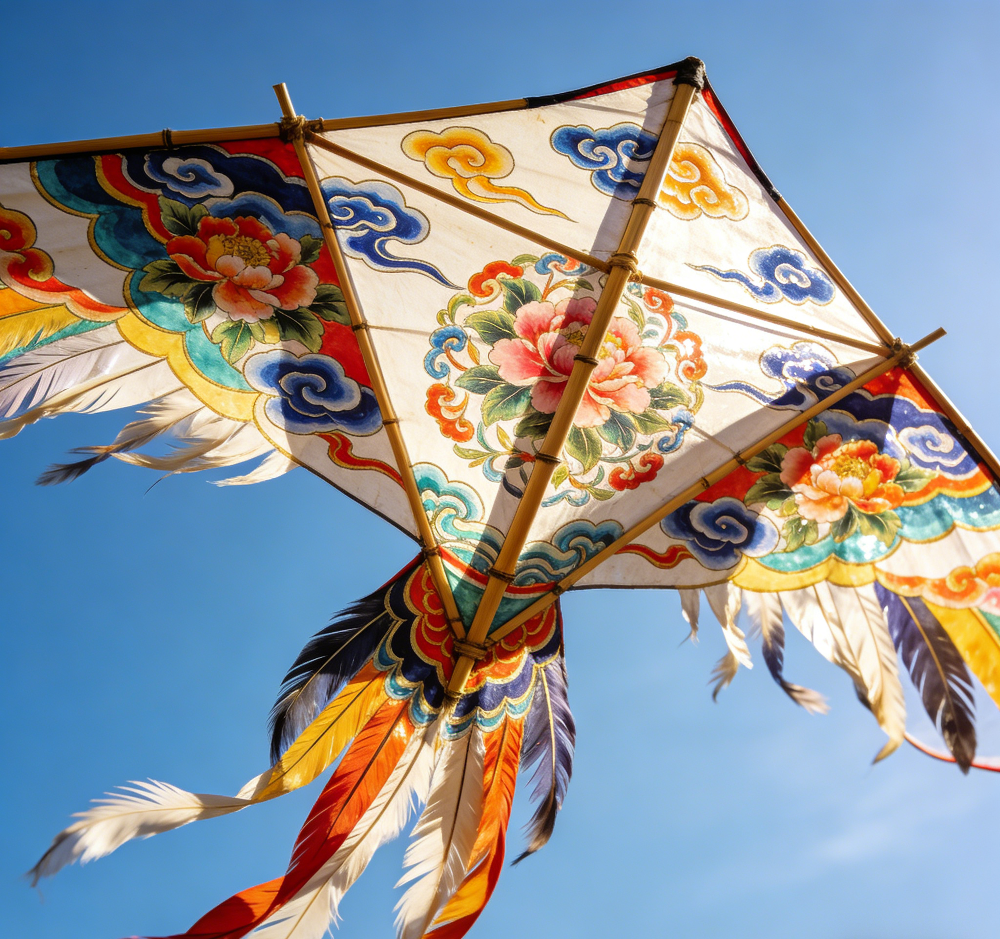
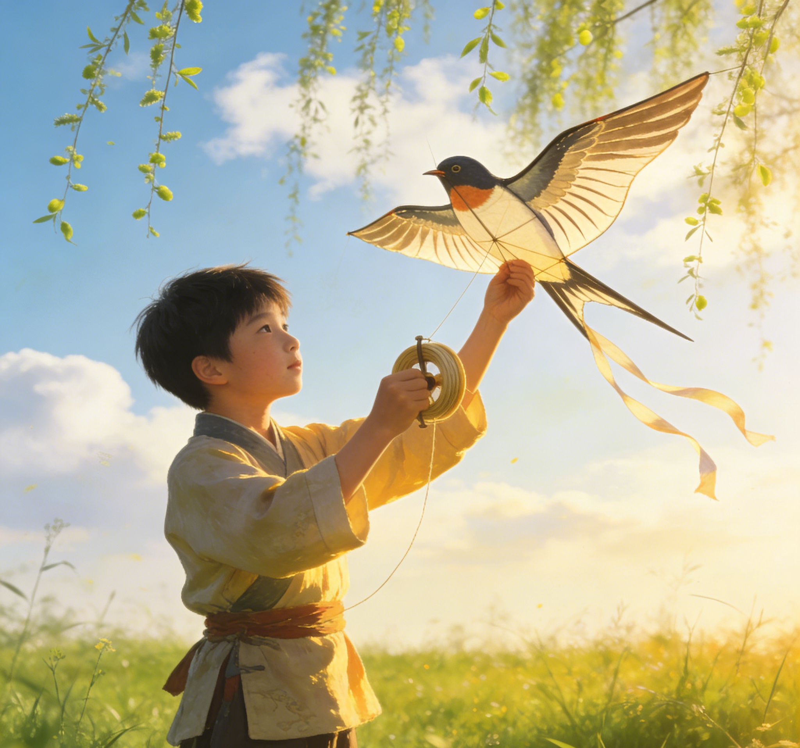
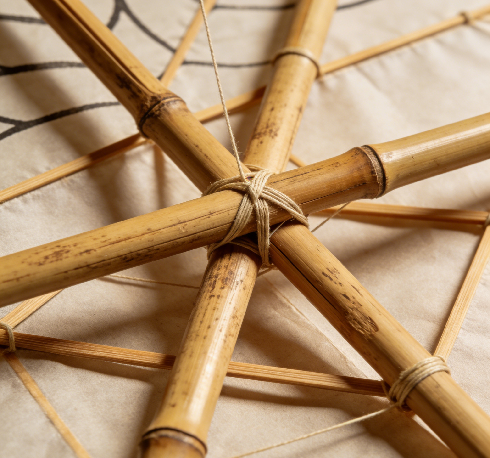

纸鸢，俗称风筝，作为中国非物质文化遗产的璀璨瑰宝，其历史可追溯至两千余年前的春秋战国时期。据《韩非子·外储说》记载，墨翟「斫木为鸢，三年而成，飞一日而败」，这是关于鸢类造物最早的文字记录；而后鲁班效仿墨翟，以竹为骨，制出能「三日不下」的木鸢，成为纸鸢最初的雏形。
作为非遗技艺，纸鸢制作凝结着「扎、糊、绘、放」四大核心工艺：「扎」是骨架搭建，需精准把控竹条的粗细、弧度，决定纸鸢的飞行姿态；「糊」是裱纸塑形，讲究纸与骨的贴合度，薄而不裂、轻而不飘；「绘」是点睛之笔，山水、花鸟、瑞兽等纹样皆蕴含东方美学；「放」则需懂风知势，让纸鸢与自然相融。
如今，纸鸢早已超越「玩具」的定义，成为连接古今的文化纽带。我们坚守非遗技艺的活态传承，既保留传统工艺的精髓，又融入现代设计理念，让这门千年技艺在新时代焕发生机，让更多人触摸到纸鸢背后的文化温度，感受东方美学的独特魅力。每一只纸鸢都承载着匠人的心血与祝福，承载着中国人对天空的向往，也让传统文化在春风里代代相传、生生不息。




“一线纸鸢，牵起的是千年的文化脉络；一手匠心，传承的是不灭的东方美学。”
—— 纸鸢非遗传承团队 · 守艺人
以鸢为媒，以艺为桥，让非遗文化走进生活
由非遗传承人、传统工艺匠人、文化传播者组成的专业团队，深耕纸鸢文化传承与创新十余年。
保护纸鸢非遗技艺，创新文化传播形式，让更多人感受传统手工艺的温度与魅力。
打造纸鸢文化生态，连接传统与现代，让纸鸢成为东方美学的鲜活符号。